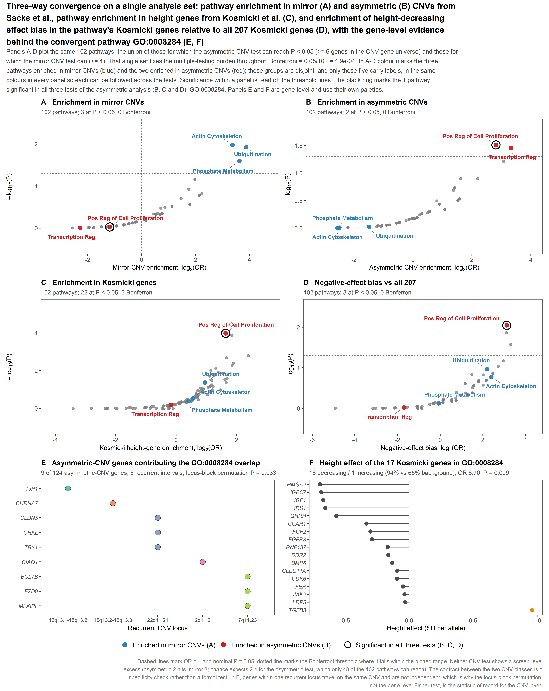

Recurrent CNVs (Sacks et al.) × exome height genes (Kosmicki et al.) × height-decreasing effect bias
| Test | GO:0008284 | P | q (BH) | P<0.05 | Bonferroni |
|---|---|---|---|---|---|
| A — Pathway enrichment in mirror CNVs | 3 genes, OR 0.44 | 0.94 | 1.00 | 3 | 0 |
| B — Pathway enrichment in asymmetric CNVs | 9/10 universe genes, OR 7.04 | 0.031 | 1.00 | 2 | 0 |
| C — Pathway enrichment in Kosmicki height genes | 17/176 genes, OR 3.11 | 1.05×10−4 | 0.0045 | 22 | 3 |
| D — Negative-effect bias vs all 207 Kosmicki genes | 16 neg / 1 pos, OR 8.70 | 0.0090 | 0.70 | 3 | 0 |
| Convergent (asymmetric: B, C and D) | — | — | — | 1 | — |
| Convergent (mirror: A, C and D) | — | — | — | 0 | — |
Two gene-set libraries were read as GMT files. Gene symbols were upper-cased and de-duplicated within each
term, and a term was retained only if it contained between 5 and 500 unique symbols
(min_set_size = 5, max_set_size = 500 in
kosmicki_pathway_cnv_pipeline.R, applied when the GMT is parsed).
| Library | Terms in GMT | Dropped (<5 or >500 genes) | Retained | Gene universe |
|---|---|---|---|---|
| GO Biological Process 2023 | 5,407 | 14 | 5,393 | 14,212 |
| KEGG 2021 Human | 320 | 1 | 319 | 8,077 |
| Total with statistics | 5,727 | 15 | 5,712 | — |
Verified by re-parsing the original GO_Biological_Process_2023.gmt and
KEGG_2021_Human.gmt and re-applying the size filter, which reproduces 5,393 and 319 exactly.
The CNV gene universe is small — 215 mapped genes for GO:BP (124 asymmetric, 104 mirror) and 103 for KEGG (61 asymmetric, 49 mirror) — so a pathway with few genes in that universe cannot reach P < 0.05 in a CNV test however extreme its genes are. Pathways were therefore restricted to those carrying enough CNV genes for a CNV test to be capable of nominal significance. The threshold is derived, not chosen: for each pathway the best-case attainable P — all of its CNV-universe genes belonging to the target class — is computed from the hypergeometric distribution, and the pathway is admitted if that is below 0.05 for either CNV class.
| Genes in CNV universe | 1 | 2 | 3 | 4 | 5 | 6 | 7 | 8 | 10 |
|---|---|---|---|---|---|---|---|---|---|
| Best-case attainable P, asymmetric (GO:BP) | 0.58 | 0.33 | 0.19 | 0.11 | 0.062 | 0.035 | 0.020 | 0.011 | 0.0035 |
| Best-case attainable P, mirror (GO:BP) | 0.48 | 0.23 | 0.11 | 0.053 | 0.025 | 0.012 | 0.0056 | 0.0026 | 0.00056 |
GO:0008284 has 10 of its genes in the CNV universe, 9 of them asymmetric and 3 mirror.

Pathways in each exclusive intersection of the three tests, per analysis. Regions not listed are empty.
| Analysis | Intersection | Pathway number | Pathway | Database |
|---|---|---|---|---|
| Asymmetric | B|C|D | 1 | Positive Regulation Of Cell Population Proliferation (GO:0008284) | GO:BP |
| B|C | — | none | — | |
| C|D | 1 | PI3K-Akt signaling pathway | KEGG | |
| C|D | 2 | Positive Regulation Of MAPK Cascade (GO:0043410) | GO:BP | |
| Mirror | A|C|D | — | none | — |
| A|C | 1 | Protein Ubiquitination (GO:0016567) | GO:BP | |
| C|D | 1 | Positive Regulation Of Cell Population Proliferation (GO:0008284) | GO:BP | |
| C|D | 2 | PI3K-Akt signaling pathway | KEGG | |
| C|D | 3 | Positive Regulation Of MAPK Cascade (GO:0043410) | GO:BP |
B|D and A|D are empty and omitted. C|D differs between the analyses (2 vs 3) because in the asymmetric analysis one of the three C∩D pathways also clears B and moves to the three-way intersection; C∩D is 3 in both.
Where GO:0008284 sits within the 102-pathway analysis set in each test:
| Test | P | Rank by P | OR | Rank by OR |
|---|---|---|---|---|
| A — mirror-CNV enrichment | 0.94 | 88 of 102 | 0.44 | 83 of 102 |
| B — asymmetric-CNV enrichment | 0.031 | 1 of 102 | 7.04 | 3 of 102 |
| C — Kosmicki enrichment | 1.05×10−4 | 2 of 102 | 3.11 | 9 of 102 |
| D — negative-effect bias | 0.0090 | 1 of 102 | 8.70 | 2 of 102 |
GO:0008284 is the single most significant pathway in both the asymmetric-CNV test and the effect-direction test, second in the Kosmicki test, and sits in the lower half of the mirror-CNV test.
| Analysis | Estimate | P | Interpretation |
|---|---|---|---|
| Asymmetric-CNV enrichment | OR 7.04 (9 of 10 universe genes) | 0.031 | Nominal |
| Locus-block permutation | Δfraction 0.044 (null 0.003 ± 0.024) | 0.033 | Statistic of record for the CNV layer |
| Mirror-CNV enrichment | OR 0.44 (3 genes) | 0.94 | Specific to asymmetric loci |
| Asymmetric vs mirror, direct contrast | OR 6.06 | 0.059 | Same direction, borderline |
| Asymmetric enrichment excluding Kosmicki genes | OR 7.03 | 0.031 | CNV and exome layers independent |
| Kosmicki enrichment | OR 3.11 | 1.05×10−4 | Bonferroni significant; q = 0.0045 |
| Negative-effect bias, two-sided Fisher | 16/1 | 0.013 | Robust to test choice |
| Negative-effect bias, Mann–Whitney | — | 0.0090 | Robust to test choice |
| Independent-gene sensitivity | 16/1, OR 8.71 | 0.0090 | Unchanged |
| Redundancy pruning | cluster size 1 | retained | Not a duplicate of another GO term |
The 17 Kosmicki genes, by effect size: HMGA2, IGF1R, IGF1, IRS1, GHRH, CCAR1, FGF2, FGFR3, RNF187, DDR2, BMP6, CLEC11A, CDK6, FER, JAK2, LRP5 (all height-decreasing), and TGFB3 (height-increasing). Dominated by the GH–IGF growth axis and FGF signalling. The 9 asymmetric-CNV genes: TJP1 (15q13.1–13.2), CHRNA7 (15q13.2–13.3), CLDN5, CRKL, TBX1 (22q11.21), CIAO1 (2q11.2), BCL7B, FZD9, MLXIPL (7q11.23).
Data-quality note. The *_overlap_genes string columns in the
master results table are unreliable — 1,286 asymmetric and 967 mirror rows carry a gene string whose length
disagrees with that row's own overlap_n, and many are blank. Gene-level results here are therefore
reconstructed from the source GMT files plus the two annotated gene tables, and validated against the master
overlap_n columns (0 mismatches across all 5,712 pathways for the Kosmicki, asymmetric and mirror
sets). make_intersection_table.R re-runs that validation and stops on any mismatch.
From Final/, in order:
Rscript run_three_way_convergence.R # analysis set, four tests, ranks, logs Rscript make_main_figure.R # Figure 1 Rscript make_intersection_table.R # pathways at each intersection
File (in results/) | Contents |
|---|---|
00_analysis_log.txt | Full analysis log: set derivation, the four tests, convergence, ranks |
Figure_1_three_way_convergence.png/.pdf | Figure 1, 6 panels (A-D pathway level, E-F gene level), 400 dpi |
analysis_set_102_pathways.csv | The 102 pathways: all four tests, q-values, Bonferroni and convergence flags |
analysis_summary.csv | Headline counts and thresholds |
analysis_set_attainability.csv | Best-case attainable P by genes-in-universe, for both CNV classes |
convergent_pathways.csv | Pathways significant in all three tests of either analysis |
convergent_pathway_ranks.csv | Rank of GO:0008284 by P and by OR in each test |
intersection_pathways.csv | Pathways at each intersection, with gene counts and shared genes |
testA_mirror / testB_asymmetric / testC_kosmicki / testD_bias_significant.csv | Pathways significant in each test |
Inputs: kosmicki_pathway_cnv_master_results.csv,
kosmicki_207_genes_annotated.csv, cnv_genes_annotated.csv, and the two GMT files in
../Old/original_pipeline_review/original_bundle/.